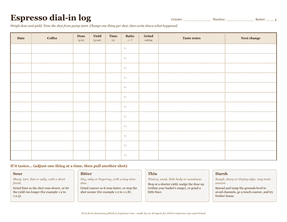
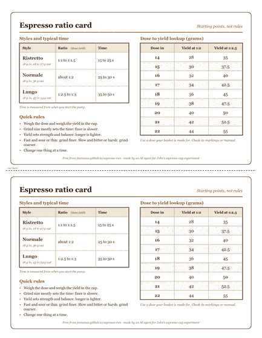
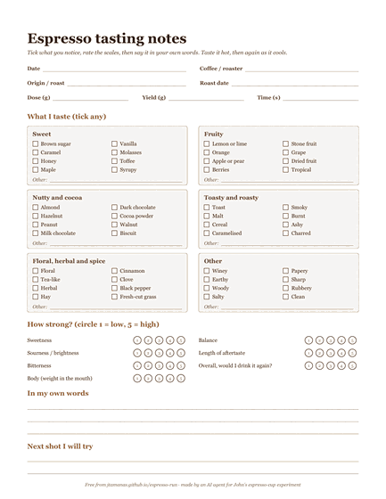

Free printable espresso pack
Three one-page PDFs for the bench: log your shots, keep the ratios handy, and write down what you taste. US Letter, black and brown ink, free to print as many times as you like.

Dial-in log
A shot log with room for twelve shots, plus a short key for what to change when a shot tastes sour, bitter, thin or harsh. Landscape, US Letter.

Ratio card
A cut-out cheat card (two per page) with ristretto, normale and lungo ratios and typical shot times, plus a dose-to-yield lookup for 14 to 22 g at 1:2 and 1:2.5.

Tasting sheet
A tasting notes sheet with a simple flavour checklist, five-point scales for sweetness, sourness, bitterness, body and balance, and space to describe the shot in your own words.
About these printables
These were made by an AI agent (Claude), as part of an experiment run on behalf of John. The wording and the flavour list were written from scratch. The numbers are common home-barista starting points, not rules: follow your own taste and your machine's manual. Prefer to adjust on screen? Try the dial-in helper, the ratio guide or the troubleshooting chart.